Pouya
Saeedi.
Known professionally as Pouyamoon — a photographer focused on portraiture, model photography, and visual storytelling, with a parallel background in martial arts.
About
I’m Pouya Saeedi, working in photography under the name Pouyamoon. My practice includes portrait, model, and advertising photography, with an interest in atmosphere, honest detail, and a deliberate visual language. Outside the studio, martial arts has been an important part of my life, shaping my approach to discipline, persistence, and creative work.
A national MMA championship title has been mentioned in the draft background. Add the exact event, year, federation, and supporting source before presenting this as a verified public achievement.
Photography
Portraits
Character-led portraits with attention to expression, texture, light, and atmosphere.
Model & Editorial
Fashion and model-focused imagery built around direction, styling, and visual cohesion.
Advertising
Image-making for products, brands, and campaigns. Add published client work only where you have permission.
Personal Projects
Ongoing experiments in visual storytelling and photographic series.
Selected Work
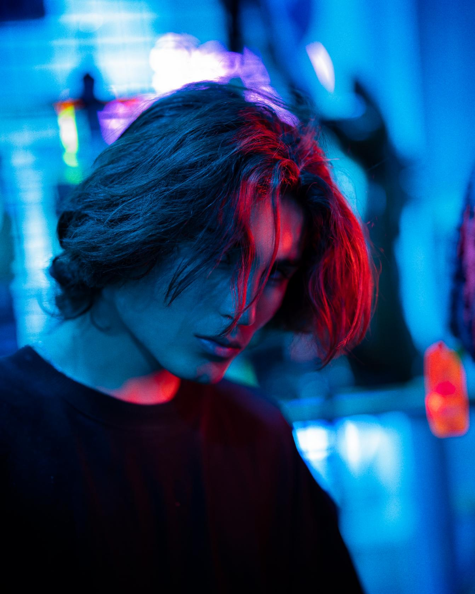
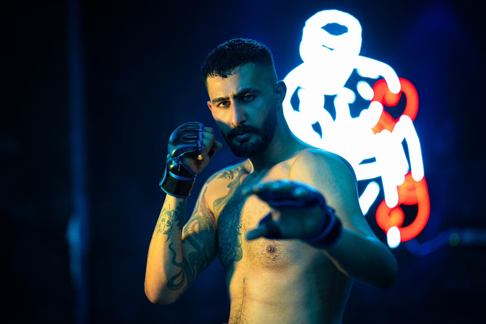
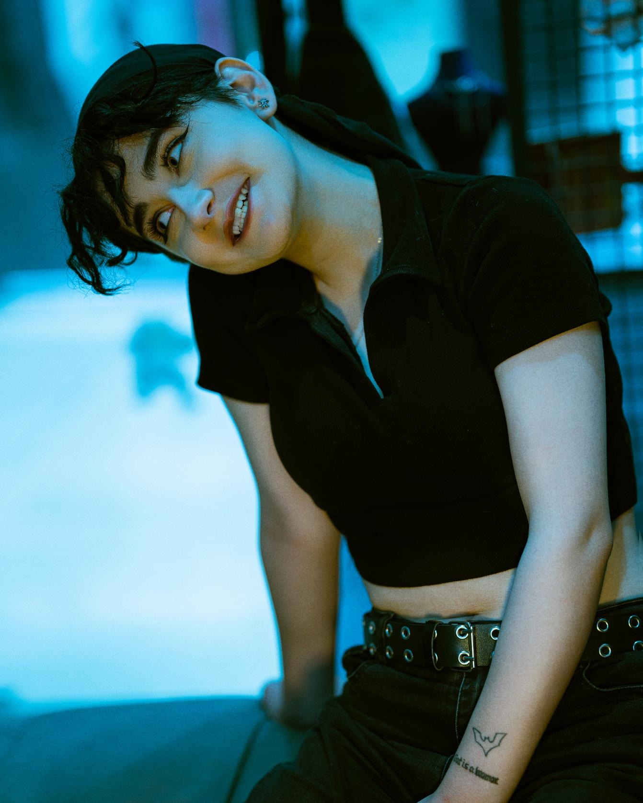
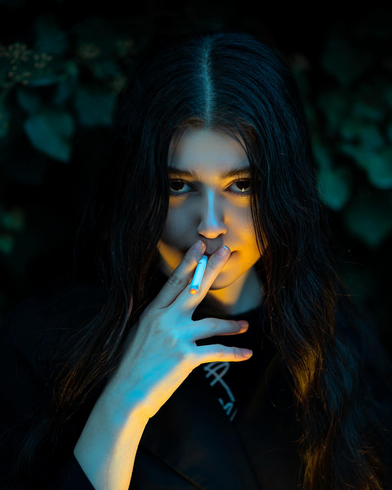
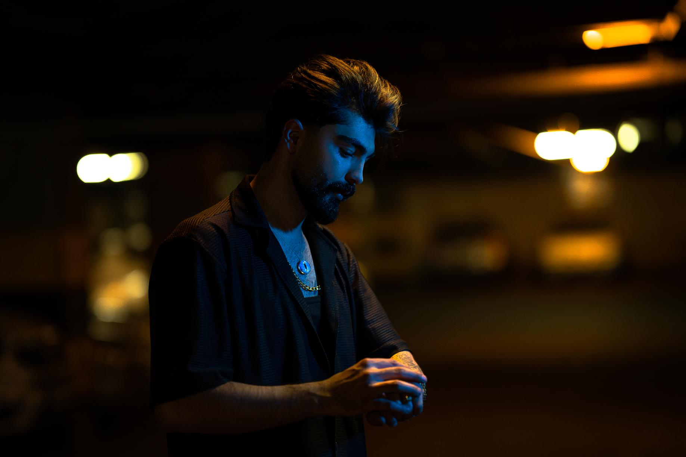
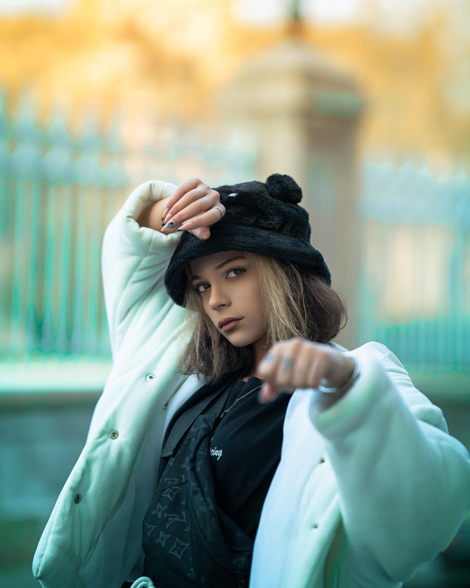
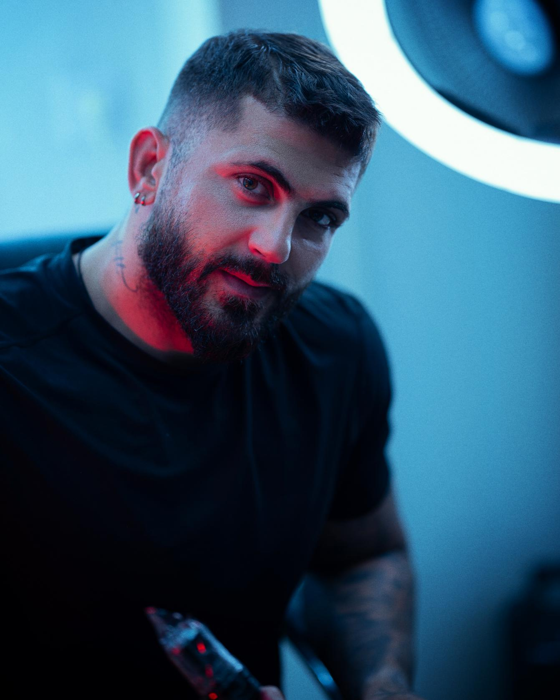
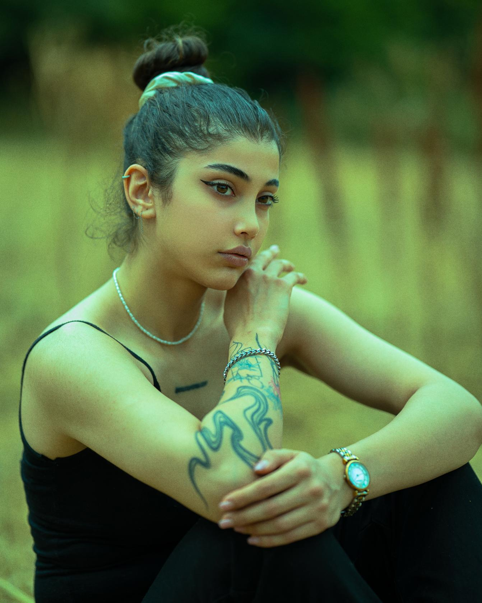
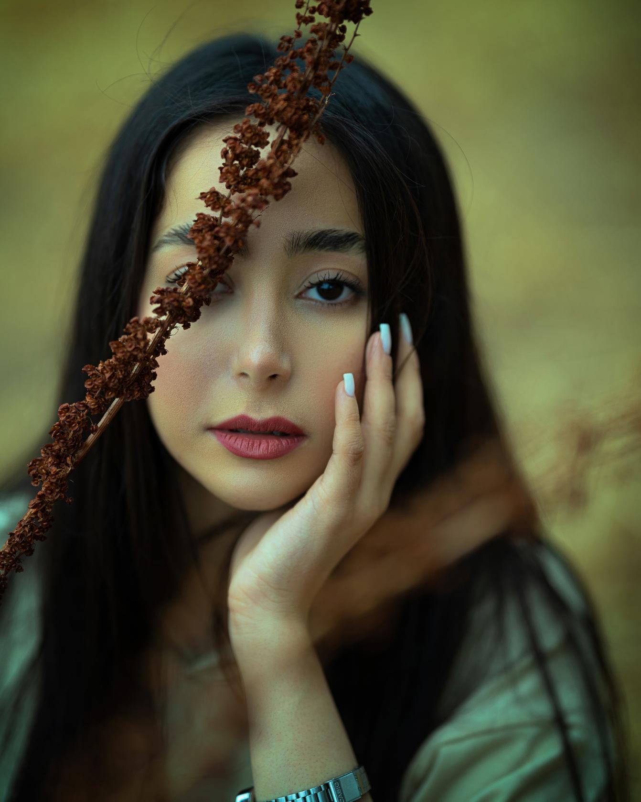
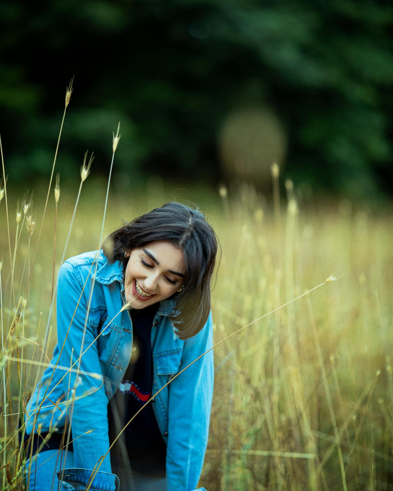
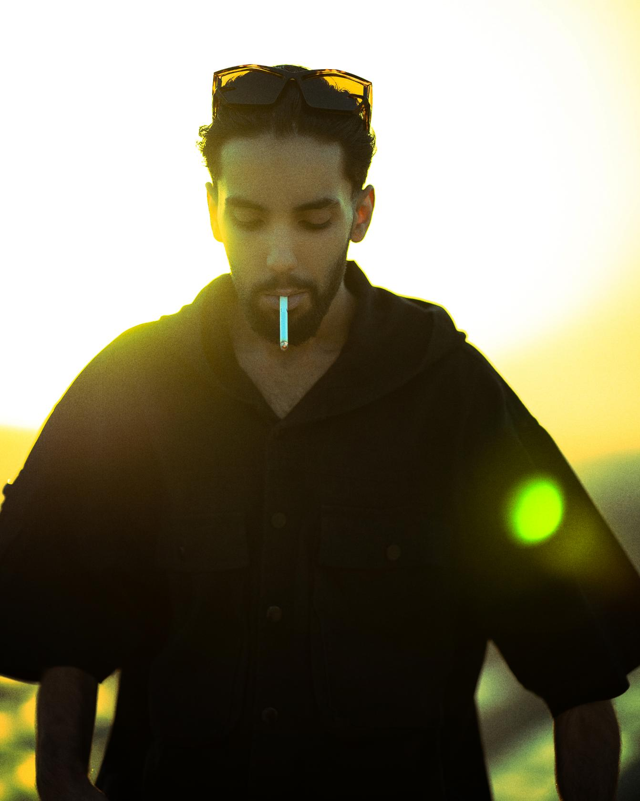
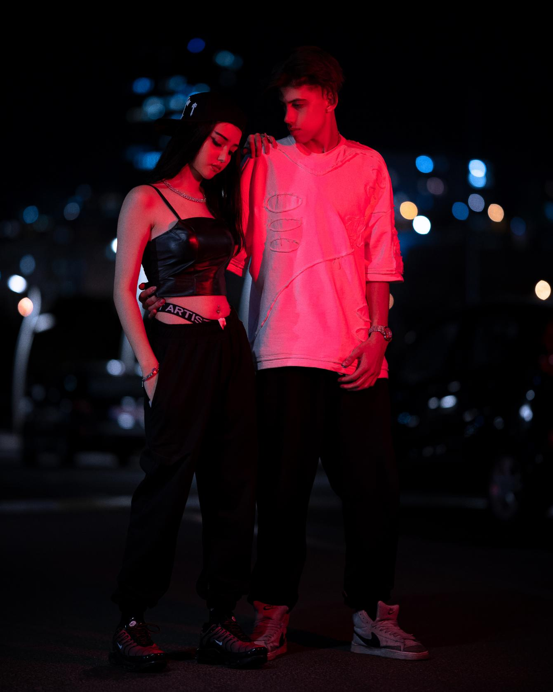
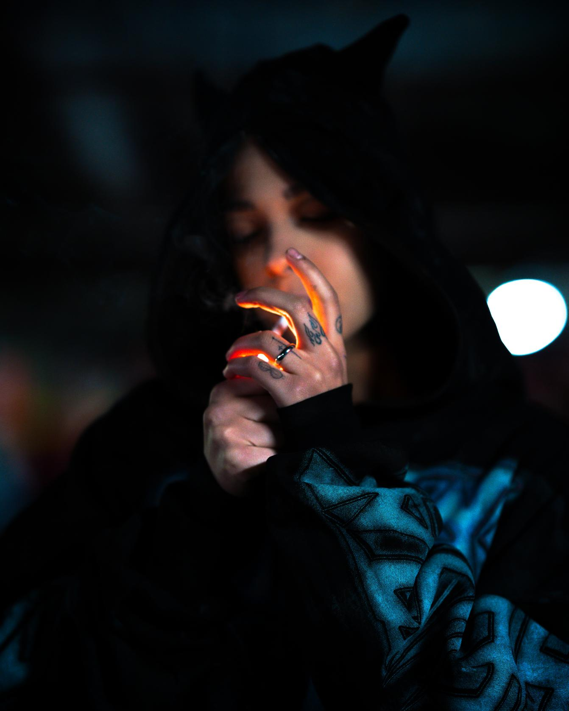
Portfolio link: add your public Behance URL here after creating the profile.
Martial Arts
Martial arts is a parallel part of my story. This section is intended for verified competition results, belt or rank details, federation information, and links to official event records.
Competition record: add event name, year, division, result, and an official result or certificate link when available.
Find me online
Behance
Photography portfolio
[Add your public Behance profile URL]
Professional profile
[Add your public LinkedIn profile URL]
Selected work and updates
[Add your public Instagram URL, if desired]
Professional enquiries
[Add a public contact email only if you want it displayed]
پویا
سعیدی.
با نام حرفهای Pouyamoon؛ عکاس پرتره، مدلینگ و تبلیغاتی با علاقه به روایت بصری، جزئیات واقعی و نورپردازی هدفمند؛ در کنار سابقه فعالیت در ورزشهای رزمی.
درباره من
من پویا سعیدی هستم و در حوزه عکاسی با نام حرفهای Pouyamoon فعالیت میکنم. زمینههای کاریام شامل عکاسی پرتره، مدلینگ و تبلیغاتی است. در کارم به بیان چهره، بافت، نور، فضای تصویر و شکلدادن به زبان بصری شخصی اهمیت میدهم. ورزش رزمی نیز بخش مهمی از مسیر زندگی من بوده و بر نگاه من به نظم، استمرار و کار خلاقانه اثر گذاشته است.
عنوان قهرمانی کشوری MMA در اطلاعات اولیه مطرح شده است. پیش از معرفی آن بهعنوان افتخار تأییدشده، نام دقیق مسابقه، سال، فدراسیون و مدرک یا منبع رسمی را اضافه کنید.
عکاسی
پرتره
پرترههایی با تمرکز بر شخصیت، حالت چهره، بافت، نور و اتمسفر.
مدلینگ و ادیتوریال
تصویرسازی متمرکز بر مدل، هدایت سوژه، استایل و انسجام بصری.
تبلیغاتی
عکاسی برای محصولات، برندها و کمپینها؛ آثار مشتریان را فقط با مجوز منتشر کنید.
پروژههای شخصی
تجربهگری در روایت بصری و ساخت مجموعههای عکاسی.
منتخب آثار
لینک پورتفولیو: پس از ساخت پروفایل عمومی، نشانی Behance را اینجا اضافه کنید.
ورزش رزمی
ورزش رزمی بخش دیگری از مسیر من است. این قسمت برای درج نتایج تأییدشده مسابقات، کمربند یا درجه، اطلاعات فدراسیون و پیوند به سوابق رسمی در نظر گرفته شده است.
برای هر نتیجه، نام مسابقه، سال، رده، مقام و لینک نتیجه رسمی یا گواهی معتبر را درج کنید.
صفحههای من
Behance
پورتفولیوی عکاسی
[پس از ساخت، لینک عمومی Behance را اضافه کنید]
پروفایل حرفهای
[لینک عمومی LinkedIn را اضافه کنید]
منتخب آثار و بهروزرسانیها
[در صورت تمایل، لینک عمومی اینستاگرام را اضافه کنید]
ایمیل
ارتباط کاری
[فقط در صورت تمایل، ایمیل کاری عمومی را اضافه کنید]